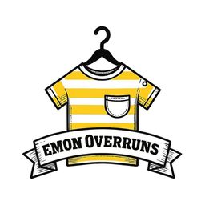

No internet connection
The E-Portal needs the internet. Check the Wi-Fi or cable, then try again.
The E-Portal opens by itself when the connection is back.
The E-Portal needs the internet. Check the Wi-Fi or cable, then try again.
The E-Portal opens by itself when the connection is back.